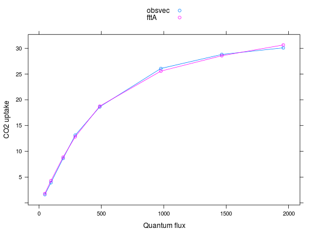

Opc4photo(data, ivmax = 39, ialpha = 0.04, iRd = 0.8, ikparm = 0.7, itheta = 0.83, ibeta = 0.93, Catm = 380, ib0 = 0.08, ib1 = 3, iStomWS = 1, ws = c("gs", "vmax"), iupperT = 37.5, ilowerT = 3, response = c("Assim", "StomCond"), curve.kind = c("Q", "Ci"), op.level = 1, level = 0.95, hessian = TRUE, op.ci = FALSE, ...)
\mu mol
m^{-2} s^{-1}). The second column should be
the observed quantum flux (\mu mol m^{-2}
s^{-1}). The third column should be observed
temperature of the leaf (Celsius). The fourth column
should be the observed relative humidity in proportion
(e.g. 0.7). An optional fifth column can contain
intercellular CO2. The reference level of CO2 should be
supplied to the function using the Catm argument.\mumol/mol).ws flag. See c4photo.'Assim' if you want to
optimize assimilation data and use 'StomCond' if
you want to optimize stomatal conductance data. The
parameters optimized will be different.'Q' a type of response which
mainly depends on light will be assumed. Typically used
to optimized light response curves or diurnals. Use
'Ci' for A/Ci curves (stomatal conductance could
also be optimized).vmax and alpha will be optimized. If 2,
vmax, alpha and Rd will be
optimized. If 3, vmax, alpha, theta
and Rd will be optimized.optim.optim in particular if a lower or upper
bound is desired this could be achieved by adding
lower=c(0,0) this will impose a lower bound on
vmax and alpha of zero so preventing
negative values from being returned. When the lower
argument is added the optimization method changes from
Nelder-Mead to BFGS.Opc4photo a list
with components
If op.level 2 bestRd will also be supplied.
If op.level 3 theta and bestRd will
also be supplied.
If op.level 2 ciRd will also be supplied. If
op.level 3 ciTheta and ciRd will also
be supplied.
Optimization method for the Collatz C4 photosynthesis model. At the moment Vcmax and alpha are optimized only.
data(aq) ## Select data for a single AQ optimization aqd <- data.frame(aq[aq[,1] == 6,-c(1:2)],Catm=400) res <- Opc4photo(aqd, Catm=aqd$Catm) resOptimization of C4 photosynthesis 95 % Conf Int best lower upper Vmax 31.326 30.815 31.838 alpha 0.054 0.052 0.056 Corr Vmax and alpha: -0.4754783 Resid Sums Sq: 0.9731662 Convergence:YESplot(res, plot.kind = 'OandF', type='o')